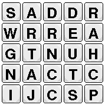

Last week, I described a distributed-object system and implemented a simple chat applet. If you recall, I promised something a little more exciting than a chat applet to demonstrate the true usefulness of the distributed-object system. This week is upon us, and I present to you something very exciting indeed1. I have written, for your amusement, a multiplayer networked game2. True to my claims, all player interaction takes place through the use of distributed objects. In fact, with a few small additions, last week's distributed-object system became this week's foundation for networked games3. Without further ado, we'll dive right into how it works.
The management
Most of the server functionality is encapsulated into manager
classes. Last week, I described the function of the
DObjectManager4. Another manager was
lurking around that I didn't mention. That was the ClientManager. This
manager sits around listening for client connections and keeps track of
clients while they're connected to the server. It tracks them in a
distributed object, which is how the chat applet manages to display a list
of all the other people connected to the server. This week, a new manager
has been introduced to the staff, that being the GameManager.
The game manager keeps track of all the games in two objects. One
contains all the games that are waiting for players, and the other tracks
games in progress. Each game has its own distributed object that contains
at least a list of the players and couple of other simple
attributes. Subscribed to each game-distributed object is a Game
object5. The Game object performs basic state
management for a game from the server side (waiting until the correct
number of
Through the magic of dynamic class-loading, we can create a new client and a new server-side game handler and start them all up automagically. |
Game object but instead will derive from Game to
implement state-management functionality specific to that game. In our
case, we have the WordGameGame class, which I'll get to in a
moment.
One last thing to note about the server architecture is that it needn't
be re-compiled or even restarted to add a game to its repertoire. Through
the magic of dynamic
class-loading6, we can create a new client and a new
server-side Game handler and start them all up
automagically. When a client creates a game, it specifies the class name
of the handler for that game, then the server loads that class and
instantiates it.
WordGame me this
Before I get into the mechanics of this game implementation, I suppose I
should explain the game for those of you who've never played or heard of
WordGame (classic as it may be).
| A sample WordGame board |
|  |
When the three minutes expire, everyone compares their list of words and any words written down by two or more people are stricken from everyone's lists. "Words" that aren't real words8 are also stricken from the lists. Then everyone adds up
The PREROUND state is just a short splash screen that gives the user a moment to prepare for the WordGame-mania that will shortly ensue. |
How it works
Aside from the plentitude of user-interface code, the game consists mainly
of two classes: WordGame and WordGameGame. The WordGameGame
class runs on the server and coordinates the transition between rounds and
different states in each round. The WordGame class responds to
coordination events from the server and runs the game on the client side.
The game progresses in rounds of three states
each. PREROUND, INROUND and
POSTROUND. The PREROUND state is just a short
splash screen that gives the user a moment to prepare for the WordGame-mania
that will shortly ensue. The server generates a random board and
transmits it to all the clients (by setting an attribute on the
game-distributed object), then changes the state to
INROUND. At this point, all the clients display the Board and the WordPanel. This displays the board and
allows users to type in words they see on the board. It's useful to note
that the word panel does not allow users to enter words that cannot be
created from the current board; this checking is implemented in the Pieces class. It
does not, however, know anything about the validity of words9.
The WordPanel also runs the three-minute timer. When the
user's timer has expired, the word panel sends the list of words generated
by the user back to the game handler by setting an attribute on the
game-distributed object. When all the clients have done this, the game
handler transitions the game to the POSTROUND state, combines
the words, removes duplicates and forks off a perl script to look all the
words up in a dictionary. Meanwhile, since the word lists were
communicated via the game-distributed object, all the clients received
each other's word lists. Upon entering the POSTROUND state,
they start up the CrossOutPanel which makes an animated
display of removing duplicate words. As the game handler receives invalid
words back from the perl script, it communicates those invalid words to
the client and the CrossOutPanel crosses those out as well.
When the whole word-validation phase is over, the clients communicate
their respective scores back to the game handler, who determines whether
to enter another round or to enter the GAMEOVER state. This
of course, depends on whether someone has broken 100 points and is not
tied for first.
That about sums up the game implementation. I didn't mention the actual mechanism used to look up words in the dictionary, but you can peruse the validate.pl script to find out how that works.
Play the game.
Praise for distributed objects
As I've said again and
again10, distributed objects make an extremely useful
paradigm for implementing distributed applications. They make it easy to
transmit messages between clients and servers, and they provide
data-sharing among those clients. These two things are common requirements
of distributed software. To top it all off, this all comes in a package
not too different from the object-oriented paradigm with which people are
now becoming comfortable.
So, dust off your editor and write that multiplayer game you've been
thinking about. You've got all the tools you need now, and a nice little
example to boot.

-- Michael Bayne <mdb@go2net.com> hereby challenges his readers to a no-holds barred cage-match WordGame extravaganza